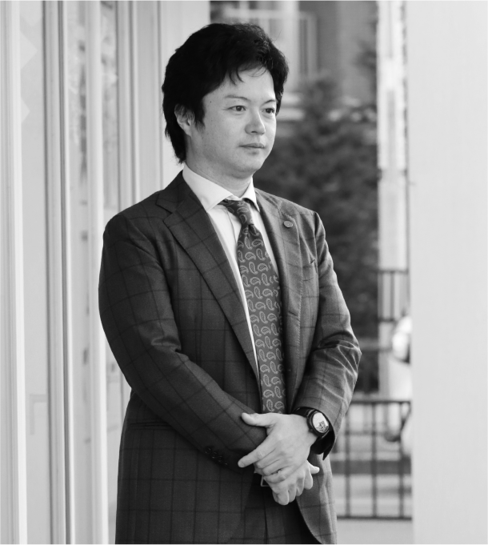
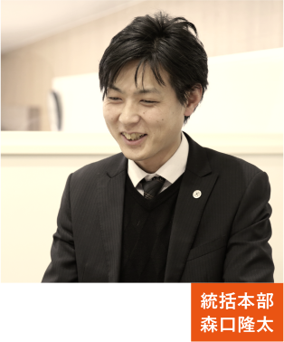

代表挨拶
私の幼少時代、やっと言葉が話せるようになったぐらいの頃、みんなが豊かで幸せだった時代です。社員は自分の仕事と会社に誇りを持ち、会社は社員を家族のように大切にしていました。お客様一人一人と心の通うお付き合いをし、お客様に起こったことはまるで自分のことのように親身になっていました。効率を追求する成果主義に日本的経営が席巻されている今、懐古的な理想論の様に聞こえると思いますが、経営の最終ゴールは人を幸せにすることに尽きると思います。人間の温もりや人間臭さを大切にし、組織の連帯感を大きくし続けることができるのであれば、理想を実現させることも可能でしょう。喜びややりがい、時には苦労を共に分かち合える家族のような会社、昔の商店のような人と人とのつながりを大切にする会社、地域の車の『かかりつけ医』となる会社、こんな会社を創りたいと目標を持ったのが私の創業の原点です。
代表取締役
吉田 宜史 Yoshida Takashi

地域・社員と共に生き、共に育つ
南大阪の自動車ユーザーにワンストップサービス、バリューチェーンを構築し、安心・快適・感動を提供する
自動車業界に先見的で卓越した大きなインパクトを起こし、自動車という地域のインフラに消える事のない軌跡を刻み、繁栄し続ける